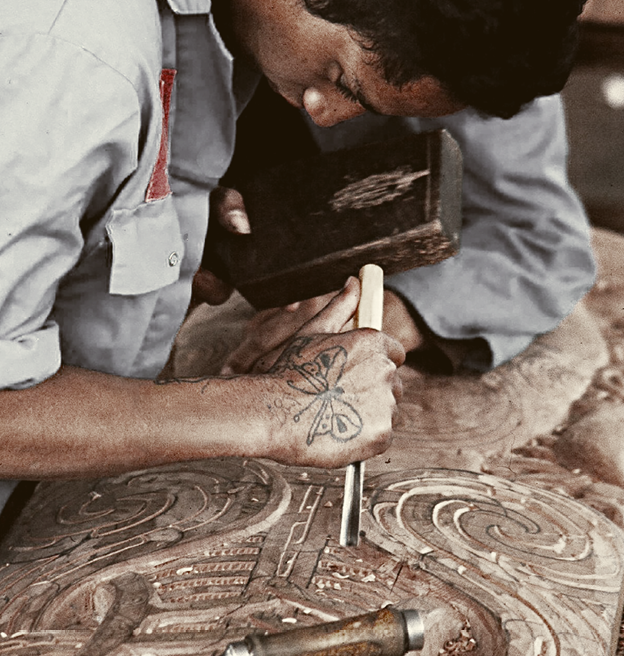

Whānau in Māori
Means Family In English
Whakairo (Māori carving) is a profound traditional art form in Aotearoa New Zealand, serving as a living archive of genealogy, spirituality, and tribal history. It involves intricate carving in wood, bone, or stone, utilizing, and adhering to strict spiritual protocols, often representing ancestors or figures like Tāne or the manaia (guardian spirit).